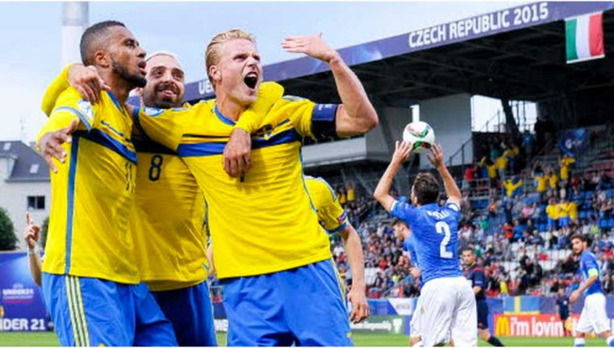

År 2015 vann Sverige U21 EM i Tjeckien. Det var första gången sedan 2004 som dem lyckades kvala in till ett U21 mästerskap och detta var också första gången som Sverige tagit guld i ett ungdomsmästerskap för herrar. Efter guldet kunde landslaget firas i kungsträdgården där alla var välkommna.
Första matchen som spelades var 18e juni mot Italien där Sverige lyckades ta hem 3 poäng efter att Kiese Thelin avgjorde 2-1 målet på straff den 86e minuten. 
Andra matchen som spelades var mot England den 21a juni som gick mot förlust med 0-1
Tredje och sista matchen som spelades mot Portugal och som avslutades med
1-1
Semifinalen var mot rivalerna Danmark den 27e juni där Sverige krossade
danskarna med hela 4-1

Finalen spelades mot Portugal där Sverige tog hem guld efter straffdrama

Lista över hela truppen: Målvakter: Patrik Carlgren Andreas Linde Jacob Rinne Försvarare: Victor Nilsson Lindelöf Alexander Milosevic Filip Helander Ludwig Augustinsson Joseph Baffo Sebastian Holmen Pa Konate Mittfältare: Oscar Lewicki Oscar Hiljemark Abdul Khalili Arber Zeneli Kristoffer Olsson Simon Tibbling Sam Larsson Robin Quaison Simon Gustafson Anfallare: Branimir Hrgota John Guidetti Isaac Kiese Thelin Mikel Ishak